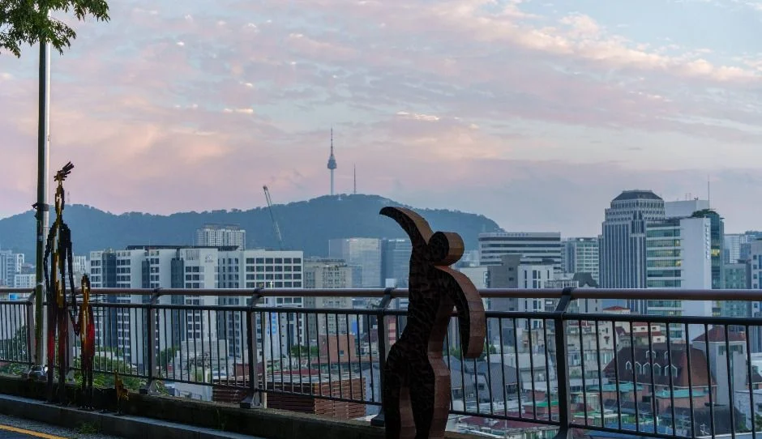
▲ 이화벽화마을 일대 전망. 노을빛 하늘 아래 도심과 남산 쪽 능선이 보인다. 촬영 시기는 자료에 없다. ⓒ 한국관광공사 · 공공누리 제1유형
"낙산 성곽길 야경은 몇 시에 가야 하고, 박물관까지 보려면 몇 시에 닫을까?" 2026년 10월 24일 기준으로 서울한양도성 누리집, 서울의 공원, 서울문화포털 야경명소, 서울시 문화 누리집, 한국천문연구원, 한국관광공사 자료에서 확인한 값만 모았다. 서울한양도성 낙산구간은 공식 안내상 24시간 개방이지만, 성곽 가까이에 있는 한양도성박물관은 17:30에 입장을 마감한다. 서울한양도성 낙산구간 안내 바로가기
그런데 서울의 11월 초~1월 초에는 해가 박물관 입장 마감 시각보다 먼저 진다. 그래서 이 글은 구간별 소요시간, 일몰과 야경 시각, 대중교통 동선, 주차 29면을 표로 풀고, 자료끼리 엇갈리는 값은 그대로 병기했다.
💡 먼저 결론
서울한양도성 낙산구간은 "24시간 개방", 낙산공원은 "상시 개방"으로 안내된다. 한국천문연구원 서울 값으로 일몰은 10월 24일 17:44, 가장 이른 날은 12월 6~7일 17:13이다. 일몰이 한양도성박물관 입장 마감(17:30, 한국관광공사 정보)보다 빠른 날은 11월 6일부터 1월 7일까지 63일(카프리즘 계산)이다. 낙산공원 주차는 불가가 아니라 29면 유료(10분당 300원)이며, 서울문화포털은 27면(일반 26·장애인 1)으로 다르게 적었다.
1. 낙산 야경, 열려 있는 시간부터 — 성곽길은 24시간, 시설은 낮에 닫는다
서울한양도성 낙산구간 페이지는 "24시간 개방"으로 안내하고, 낙산공원은 서울의 공원 안내에 "상시 개방"으로 적혀 있다. 반면 낙산전시관과 한양도성박물관은 낮 시간에만 운영한다. (2026-10-24 기준)
| 대상 | 운영 안내 | 요금 | 근거 |
|---|---|---|---|
| 한양도성 낙산구간 순성길 | 24시간 개방 | 무료(별도 요금 안내 없음) | 서울한양도성 낙산구간 페이지 |
| 낙산공원 | 상시 개방 | 무료 | 서울의 공원, 서울문화포털 야경명소 |
| 낙산전시관 | 09:00~17:00, 월요일 휴관(화~일 운영) | 무료 | 서울의 공원, 서울시 미디어허브(2026-10-21) |
| 한양도성박물관 | 09:00~18:00, 월요일·1월 1일 휴관. 한국관광공사 정보는 입장 마감 17:30 | 무료 | 서울시 문화 누리집(최종 수정 2026-03-20), 한국관광공사 TourAPI |
| 이화벽화마을 | 상시 개방(주거지) | 무료 | 한국관광공사 TourAPI |
| 성곽 야간 조명 점등·소등 시각 | 확인하지 못함 | — | 공식 시각 안내 없음 |
표에서 눈에 띄는 점은 길은 밤새 열려 있어도 전시 시설은 모두 17:00나 18:00 전에 문을 닫는다는 것이다. 서울의 공원 안내에는 공원등이 253본 293등이라고 적혀 있고 "서울에서 가장 아름다운 야경을 볼 수 있는 곳"이라는 문장도 있지만, 성곽 조명을 켜고 끄는 시각은 공식 자료에서 확인하지 못했다. 서울시 미디어허브 시민기자 기사(2022-08-31)에도 어두워지면 조명이 하나둘 켜진다는 서술뿐이다. 서울의 공원 낙산공원 안내 바로가기
같은 서울한양도성 누리집의 백악구간 페이지에는 겨울(11~2월) 권장 탐방 시간 09:00~17:00이 따로 있지만, 낙산구간 페이지에는 권장 시간표가 없다. 24시간 개방이라는 안내가 곧 "밤에 안전하다"는 뜻은 아니므로 아래 겨울 유의사항을 함께 읽자.
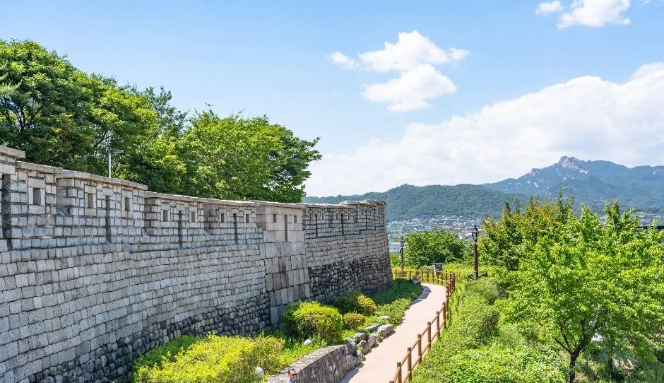
▲ 낙산공원 성곽길. 성벽 너머로 먼 산 능선이 보이고 나무가 푸르다. 촬영 시기는 자료에 없다. ⓒ 한국관광공사 · 공공누리 제1유형
2. 낙산구간은 3.2km일까 2.1km일까 — 공식 자료 두 개가 다르다
서울한양도성 누리집은 혜화문~광희문 3.2km에 약 1시간 30분, 서울의 공원은 혜화문~흥인지문 2.1km에 약 1시간으로 안내한다. 두 안내의 끝점 표기(광희문 vs 흥인지문)가 다른 것이 한 원인으로 보이지만 두 기관 모두 차이의 이유는 밝히지 않았다. 서울한양도성 낙산구간 상세 페이지도 경로는 흥인지문에서 끝나는 것으로 적었다. (2026-10-24 기준)
| 안내처 | 구간 | 거리 | 공식 소요시간 | 단순 환산(시속 4km~3km) |
|---|---|---|---|---|
| 서울한양도성 누리집 낙산구간 | 혜화문~광희문 | 3.2km | 약 1시간 30분(난이도 ★★) | 약 48~64분 |
| 서울의 공원 낙산공원 | 혜화문~흥인지문 | 2.1km | 약 1시간 | 약 32~42분 |
| 서울의 공원(역사탐방로) | 공원 내 탐방로 | 2.1km | 안내 없음 | 약 32~42분 |
| 서울한양도성 누리집(혜화역에서) | 혜화역 2번 출구~낙산공원 입구~정상 | 안내 없음 | 도보 약 20분 + 정상까지 5분 | — |
공식 소요시간이 단순 환산보다 긴 이유는 두 안내 모두 산정 근거를 밝히지 않았지만, 낙산 정상(서울한양도성 124m, 서울의 공원 125m로 높이도 1m 다르게 적혀 있다) 오르막과 마을 구간 이동, 전망 정차를 포함한 값으로 보인다. 서울한양도성 순성안내 요약에는 낙산구간이 "혜화문~광화문"으로 적혀 있는데, 구간 상세 페이지는 광희문이므로 오기로 보인다.
📍 공식 경로 순서
서울한양도성 누리집은 혜화문 → 한성대입구역 4번 출구 → 나무계단 → 가톨릭대학 뒷길 → 장수마을 → 낙산공원 놀이마당 → 낙산정상 → 이화마을 → 한양도성박물관(서울디자인지원센터) → 흥인지문공원 → 흥인지문 순으로 안내한다. 가톨릭대학 뒤편에서는 축조 시기별로 성돌 모양이 다른 것을 볼 수 있다고 소개한다.
낙산은 서울한양도성 안내상 높이 124m로 내사산 중 가장 낮은 산이고, 한국관광공사 정보로 낙산공원은 2002년 6월 12일에 문을 열었다. 서울의 공원 안내는 공원 면적을 197,304㎡로 적었다. 공원 관리사무소 문의는 02-743-7985, 공원 안내는 서울문화포털 기준 02-3783-5900이다.
인왕구간은 4.0km에 약 2시간 30분, 낙산구간(★★)보다 거리와 소요시간이 길다. 비교는 인왕산 순성길 가이드에서 볼 수 있다. 낙산구간 상세 바로가기
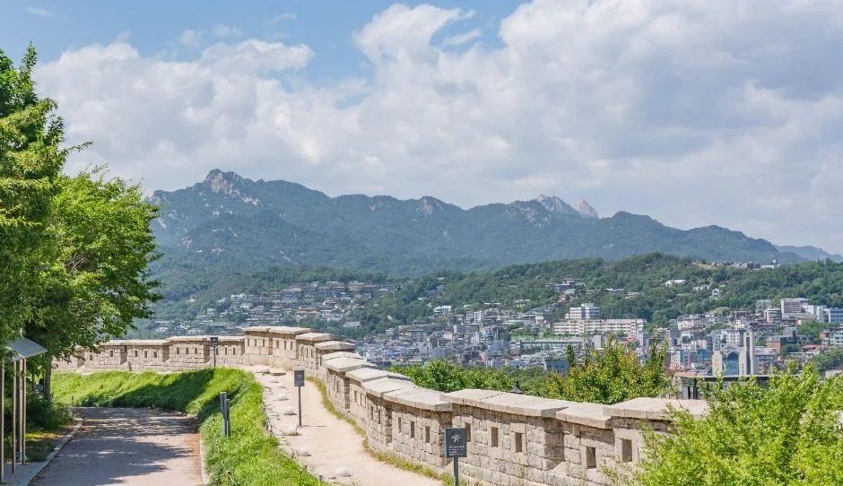
▲ 성곽 위쪽에서 본 낙산 성곽길과 도심 주택가. 촬영 시기는 자료에 없다. ⓒ 한국관광공사 · 공공누리 제1유형
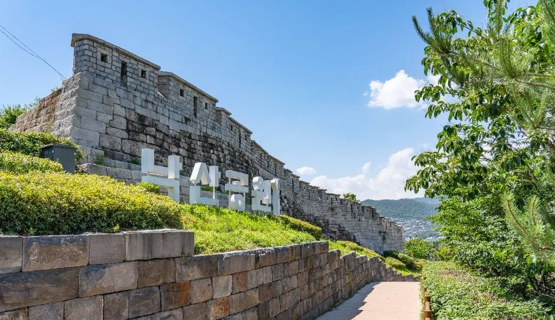
▲ 성벽 아래에 놓인 "낙산공원" 글자 조형과 성곽길. 나뭇잎이 푸른 모습이며 촬영 시기는 자료에 없다. ⓒ 한국관광공사 · 공공누리 제1유형
3. 일몰 17:13~17:44 — 일몰과 야경 시각표, 그리고 박물관 마감과의 간격
한국천문연구원 서울 값으로 일몰은 10월 24일 17:44에서 12월 6~7일 17:13까지 앞당겨졌다가 이후 다시 늦어진다. 박물관 입장 마감(17:30)보다 일몰이 빠른 기간은 11월 6일~1월 7일 63일이다(카프리즘 계산). 한국천문연구원 월별 해/달 출몰시각 바로가기
| 날짜 | 일몰 | 시민박명 종료 | 항해박명 종료 | 박물관 입장 마감(17:30) 대비 일몰 |
|---|---|---|---|---|
| 2026-10-24 | 17:44 | 18:10 | 18:41 | 14분 늦음 |
| 2026-11-01 | 17:34 | 18:01 | 18:32 | 4분 늦음 |
| 2026-11-15 | 17:22 | 17:49 | 18:21 | 8분 빠름 |
| 2026-12-01 | 17:14 | 17:43 | 18:15 | 16분 빠름 |
| 2026-12-06 | 17:13 | 17:43 | 18:15 | 17분 빠름(가장 이른 일몰) |
| 2026-12-21 | 17:17 | 17:46 | 18:19 | 13분 빠름 |
| 2027-01-01 | 17:24 | 17:53 | 18:26 | 6분 빠름 |
| 2027-01-15 | 17:37 | 18:05 | 18:38 | 7분 늦음 |
| 2027-02-01 | 17:55 | 18:23 | 18:54 | 25분 늦음 |
표에서 11월 중순~1월 초에는 일몰이 17:13~17:29 사이라, 박물관 입장 마감 시각에는 이미 해가 진 뒤다. 시민박명은 태양 중심이 지평선 아래 6도에 이르는 시각, 항해박명은 12도에 이르는 시각을 뜻하는 천문학 용어이며, 어느 시각이 "야경이 가장 예쁜 때"인지는 공식 자료에 없어 적지 않았다. 일몰은 날마다 달라지므로 방문일 값은 한국천문연구원에서 직접 확인하자.
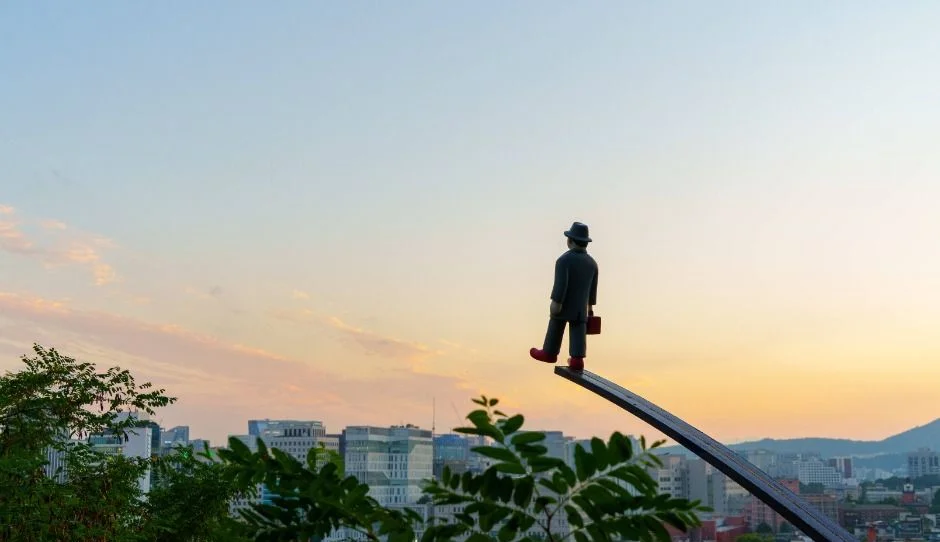
▲ 해 질 녘 이화벽화마을 일대. 막대 끝에 선 사람 모양 조형물이 보인다. 촬영 시기는 자료에 없다. ⓒ 한국관광공사 · 공공누리 제1유형
4. 몇 시에 어디에 있어야 하나 — 12월 첫째 주 방향별 시간표
일몰 무렵 낙산 정상에서 야경을 보고 박물관도 들르려면 박물관을 먼저 보고 성곽길을 올라가는 순서가 시간표상 맞다. 서울한양도성 누리집의 안내 순서(혜화문→흥인지문)는 출발이 늦으면 박물관 도착이 마감 뒤가 된다. 아래는 일몰 17:14(2026-12-01 한국천문연구원 서울 값)와 공식 소요시간 90분을 근거로 한 카프리즘 계산이다.
| 시나리오 | 출발 | 박물관 | 일몰(17:14) 무렵 | 주의 |
|---|---|---|---|---|
| A. 안내 순서 그대로, 늦게 출발 | 16:30 혜화문 | 도착 약 18:00(입장 마감 17:30 이후) | 걷기 시작 후 약 45분째, 낙산 정상 부근으로 추정 | 박물관은 볼 수 없음 |
| B. 박물관 먼저(흥인지문 쪽에서 출발) | 15:30 박물관 도착 | 입장 15:30, 관람 약 1시간 | 16:30부터 성곽길을 오르면 정상 도착 전후 | 구간 일부만 걷는 코스로, 정상까지 시간은 공식 값 없음 |
| C. 야경만(혜화역에서 출발) | 16:40 혜화역 2번 출구 | 생략 | 공원 입구 도착 약 17:00, 정상까지 +5분 | 서울한양도성 안내의 20분+5분 기준 |
시나리오 B가 맞는 이유는 박물관이 낙산구간 남쪽 끝(흥인지문공원)에 있고 입장 마감이 17:30이라서다. 이 시간표는 공식 자료의 거리·소요시간을 이어 붙인 추정이며 실제 걸음 속도와 계단 구간에 따라 달라진다.
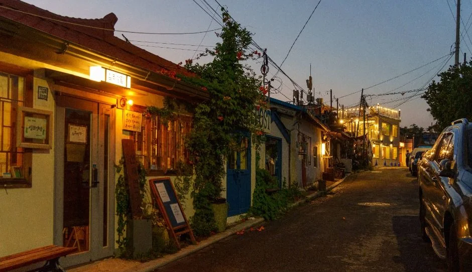
▲ 해 질 녘 불빛이 켜진 이화벽화마을 골목(한국관광공사 이화벽화마을 사진). 촬영 시기는 자료에 없다. ⓒ 한국관광공사 · 공공누리 제1유형
5. 이화마을 벽화는 지금도 볼 수 있나 — 주거지이므로 매너가 먼저다
한국관광공사 자료상 이화벽화마을은 2006년 "낙산프로젝트"로 작가 70여 명이 참여해 만들어졌고 현재 상시 개방으로 분류돼 있다. 다만 서울한양도성 누리집은 장수마을·이화마을을 지날 때 주민에게 피해가 없도록 배려하라고 따로 적었다. (2026-10-24 기준)
| 항목 | 공식 안내 내용 | 출처 |
|---|---|---|
| 마을 구간 | 장수마을·이화마을 통과 시 주민 피해 없도록 배려 | 서울한양도성 낙산구간 |
| 소음 | 주택가에서는 큰소리로 웃거나 소리 지르지 않기 | 서울한양도성 순성시 유의사항 |
| 성곽 | 성곽 위에 올라가기, 낙서, 못 박기 금지 | 서울한양도성 순성시 유의사항 |
| 공원 | 야영·취사·불 피우기 금지, 음주·가무·소란 금지, 쓰레기 되가져가기 | 서울의 공원 낙산공원 |
| 이화벽화마을 안내소 | 종로 여행자 지원센터 1800-9008 | 한국관광공사 TourAPI |
표처럼 야간에는 소음 민원이 생기기 쉬운 구간이라 한 줄로 조용히 걷는 것이 공식 권고와도 맞다. 벽화의 현재 보존 상태는 공식 자료에서 확인하지 못했다. 서울한양도성 순성시 유의사항 바로가기
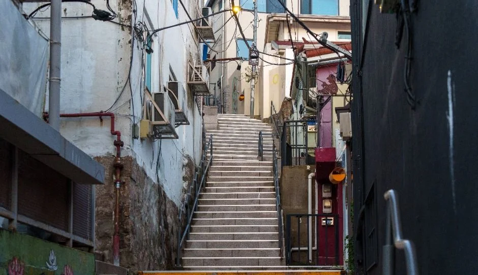
▲ 이화벽화마을 계단 골목. 담벼락에 그림이 보이며 촬영 시기는 자료에 없다. ⓒ 한국관광공사 · 공공누리 제1유형
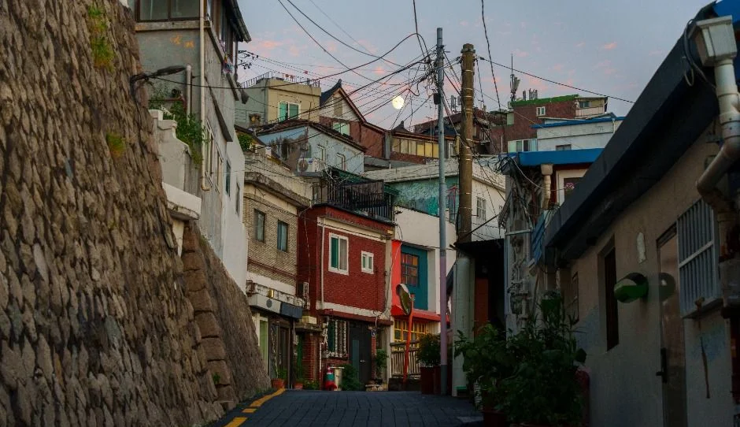
▲ 성벽 옆으로 주택이 붙어 있는 낙산 일대 골목(한국관광공사 이화벽화마을 사진). 촬영 시기는 자료에 없다. ⓒ 한국관광공사 · 공공누리 제1유형
6. 대중교통 동선 — 혜화역 10분인가 20분인가, 종로03은 어디서 타나
공식 자료상 가장 가까운 지하철은 혜화역 2번 출구이지만 소요시간은 서울의 공원 10분, 서울한양도성 20분으로 엇갈린다. 서울시 미디어허브(2026-10-21)는 2번 출구에서 낙산공원까지 약 661m, 낙산전시관까지 약 592m로 적었다. (2026-10-24 기준)
| 동선 | 안내 내용 | 근거 |
|---|---|---|
| 혜화역 2번 출구 → 낙산공원 | 도보 10분(서울의 공원·서울문화포털) / 공원 입구까지 20분, 정상 5분 추가(서울한양도성) / 약 661m(미디어허브) | 서울의 공원 외 |
| 혜화역(마로니에공원) 정류장 버스 | 2112, 102, 104, 106, 107, 140, 143, 150, 160, 100, 301 하차 후 도보 10분 | 서울의 공원 |
| 동대문역 5번 출구 → 종로03 마을버스 | 낙산공원 종점(낙산종점) 하차. 서울한양도성도 같은 동선 안내 | 서울의 공원, 서울한양도성 |
| 동대문역 1번 출구 → 낙산공원 | 도보 21분 | 서울의 공원 |
| 동대문역 10번 출구 → 동대문성곽공원 | 도보 2분, 낙산 순성길 오르기 | 서울한양도성 |
| 창신역 3번 출구 → 종로03 | 낙산종점 하차. 2번 출구 도보는 23분 | 서울의 공원 |
| 한성대입구역 4번 출구 → 혜화문 | 도보 3분(낙산구간 페이지). 같은 누리집 백악구간 페이지는 5번 출구 도보 5분으로 적어 엇갈림 | 서울한양도성 |
종로03은 마을버스라 일반 버스보다 운행 시간이 짧을 수 있지만, 막차 시각과 배차 간격은 공식 자료에서 확인하지 못했다. 해가 진 뒤 돌아올 길을 고려해 하산은 혜화역 또는 동대문역 쪽으로 걸어 내려오는 계획을 세우는 편이 안전하다. 응봉산 야경 코스와 비교하려면 응봉산 팔각정 일몰·야경 가이드를 같이 보자.
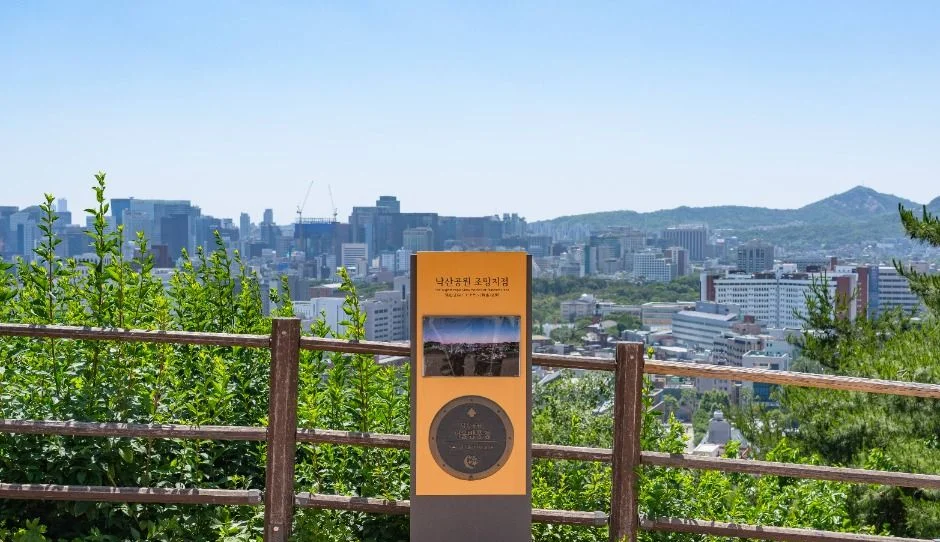
▲ 낙산 전망 지점의 안내 표지판. 난간 너머로 도심과 먼 산이 보인다. 촬영 시기는 자료에 없다. ⓒ 한국관광공사 · 공공누리 제1유형
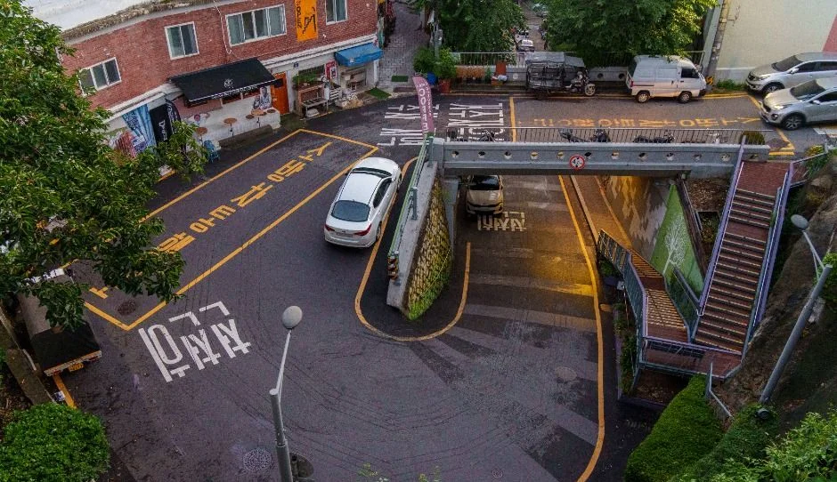
▲ ▲ 이화마을 일대 도로와 계단 골목을 위에서 본 모습(한국관광공사 이화벽화마을 사진). 촬영 시기는 자료에 없다. ⓒ 한국관광공사 · 공공누리 제1유형
7. 낙산공원 주차, 안 되는 줄 알았는데 — 29면 유료인데 27면으로도 적혀 있다
낙산공원 주차는 가능하다. 서울의 공원은 29대·10분당 300원, 서울문화포털 야경명소 안내는 일반 26대와 장애인 1대(27대)로 적었고, 한국관광공사 TourAPI도 "가능(29대)"이다. (2026-10-24 기준)
| 자료 | 주차 대수 | 요금·시간 | 문의 |
|---|---|---|---|
| 서울의 공원 낙산공원 | 29대(주차장 29면) | 10분당 300원. 주차장 운영시간은 따로 명시 없음 | 02-743-7985 |
| 서울문화포털 야경명소 | 일반 26대·장애인 1대(27대) | 운영시간 "상시" | 주차 070-8955-7426 |
| 한국관광공사 TourAPI | 가능(29대) | 안내 없음 | 02-743-7985~6 |
| 서울시 미디어허브 시민기자(2021-02-09, 과거 자료) | 안내 없음 | 소형 150원·중형 300원·대형 450원(5분당), 09:00~24:00 | — |
29대와 27대가 2대 차이 나는 이유는 공식 자료에 없다. 2021년 시민기자 기사의 소형 5분당 150원은 현행 10분당 300원과 같지만 중형·대형 요금은 현재 공식 값을 확인하지 못했고, 주차장 야간 운영시간과 만차 현황도 확인하지 못했다. 주소는 서울의 공원이 "낙산길 41", 야경명소 안내가 "낙산성곽서길 173"으로 달라 내비게이션 검색은 낙산공원 주차장이라는 이름으로 하고 현장 표지를 확인하는 편이 낫다. 서울에서 무료 주차가 되는 명소는 서울 무료 주차 명소 가이드에서 따로 정리했다. 서울문화포털 낙산공원 야경명소 바로가기
| 상황 | 공식 자료에서 말할 수 있는 것 | 카프리즘 판단 |
|---|---|---|
| 자차 방문 | 주차 29면(서울문화포털 27면), 10분당 300원, 만차 현황은 확인 못함 | 2시간 주차 약 3,600원(카프리즘 계산: 12구간 x 300원). 만차 가능성이 있어 혜화역 방면 대중교통을 대안으로 둔다 |
| 대중교통만 | 혜화역 2번 출구 약 661m(미디어허브), 소요 10분(서울의 공원)·20분(서울한양도성) | 두 안내가 엇갈려 최대 20분으로 잡는 편이 안전하다 |
| 노부모·유모차 동행 | 낙산구간 난이도 ★★, 마을 구간에 계단(서울한양도성 안내의 나무계단·장수마을) | 경사·계단 정보는 구간별 공식 수치가 없어, 종로03 종점(낙산공원)에서 시작해 내려오는 방향이 부담이 적을 것으로 추정한다 |
| 비용 합산(입장·관람) | 성곽길·낙산공원·낙산전시관·한양도성박물관 모두 무료 | 입장료는 0원이고 자차일 때만 주차비가 든다(카프리즘 계산) |
표에서 비용 줄이 모두 무료인 것은 서울 공식 안내 기준이며, 인근 상점·카페 비용은 포함하지 않았다. 종로03 종점 시작 방향은 서울한양도성 안내의 "낙산정상까지 5분" 표기에서 이어진 추정이며 공식 권고가 아니다.
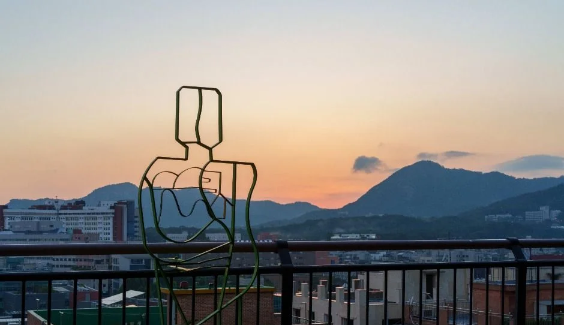
▲ 철사로 만든 사람 형상 조형물과 해 질 녘 하늘. 촬영 시기는 자료에 없다(한국관광공사 이화벽화마을 사진). ⓒ 한국관광공사 · 공공누리 제1유형
8. 한양도성박물관 — 무료, 월요일 휴관, 낙산구간의 종착점
한양도성박물관은 흥인지문공원에 있는 박물관으로 관람료는 무료이고 월요일과 1월 1일에 쉰다. 주소는 서울 종로구 율곡로 283 서울디자인지원센터 1~3층이며 문의는 02-724-0243이다. (2026-10-24 기준) 서울시 문화 누리집 한양도성박물관 바로가기
| 항목 | 서울시 문화 누리집 | 한국관광공사 TourAPI |
|---|---|---|
| 운영시간 | 평일·주말·공휴일 모두 09:00~18:00(3~10월·11~2월 구분 없음) | 09:00~18:00(입장 마감 17:30) |
| 휴관 | 1월 1일, 매주 월요일 | 매주 월요일(월요일이 공휴일이면 정상 운영), 1월 1일 |
| 관람료 | 무료 | 무료 |
| 구성 | 안내 없음 | 상설전시실, 기획전시실, 한양도성 자료실, 학습실 |
두 자료에서 입장 마감 시각은 서울시 문화 누리집에 없고 한국관광공사에만 17:30으로 적혀 있어, 이 글의 비교 기준은 더 이른 시각인 17:30으로 잡았다. 월요일 공휴일 운영 여부도 한국관광공사 쪽에만 있다. 12월 초에는 일몰(17:14) 16분 뒤에 입장이 끝나고 46분 뒤에 문을 닫으므로(카프리즘 계산), 박물관은 낮 일정으로 먼저 잡는 편이 낫다.
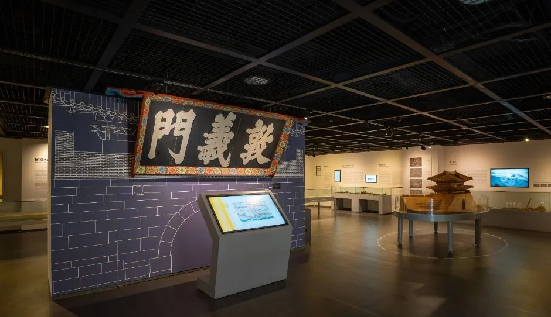
▲ 한양도성박물관 전시 공간. 돈의문 현판이 걸린 벽과 안내 단말, 성문 모형이 보인다. 촬영 시기는 자료에 없다. ⓒ 한국관광공사 · 공공누리 제1유형
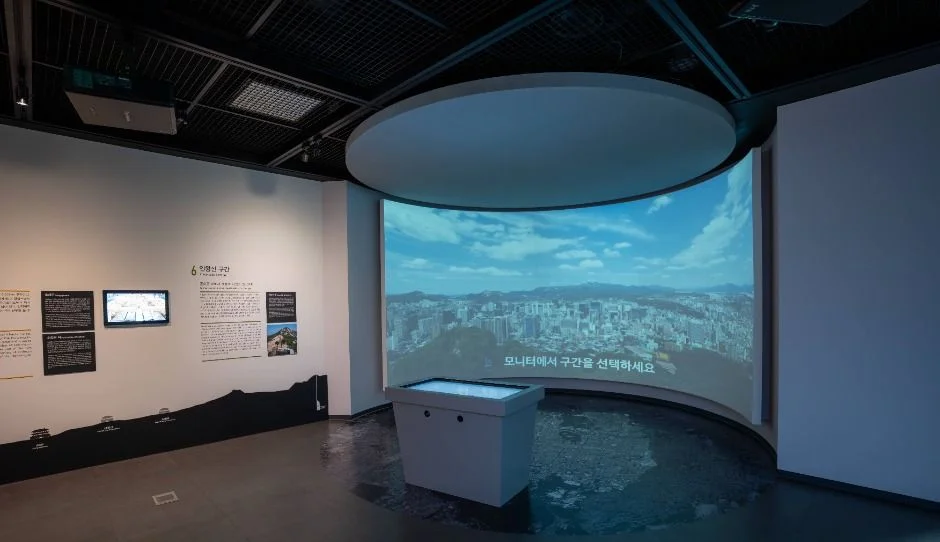
▲ 한양도성박물관 영상 전시 공간. 곡면 화면에 도시 전경이 비친다. 촬영 시기는 자료에 없다. ⓒ 한국관광공사 · 공공누리 제1유형
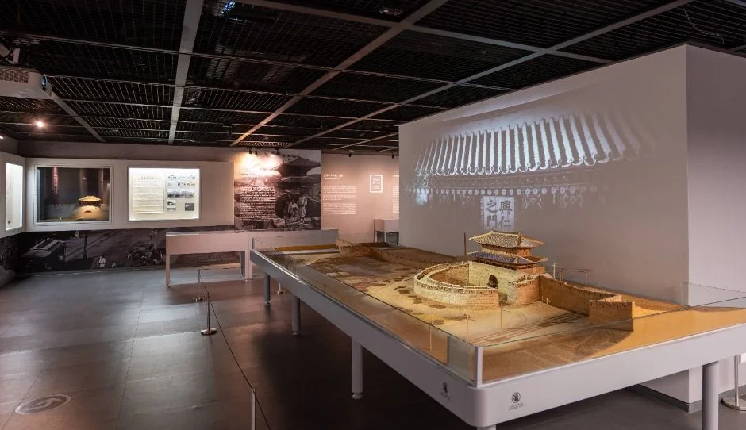
▲ ▲ 한양도성박물관 전시 공간. 긴 전시대 위에 도성 관련 모형이 놓여 있다. 촬영 시기는 자료에 없다. ⓒ 한국관광공사 · 공공누리 제1유형
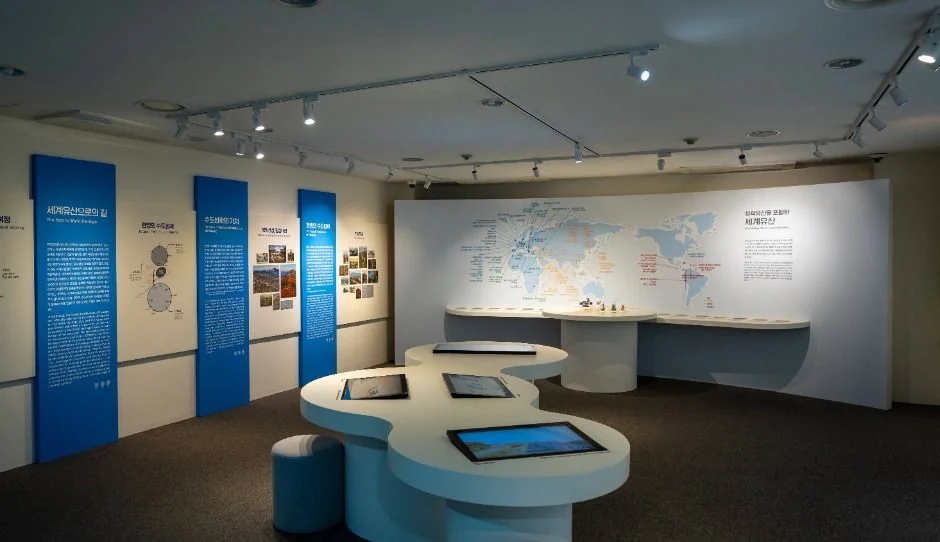
▲ ▲ 한양도성박물관 전시실. 벽면 안내 패널과 곡선형 터치 단말이 보인다. 촬영 시기는 자료에 없다. ⓒ 한국관광공사 · 공공누리 제1유형
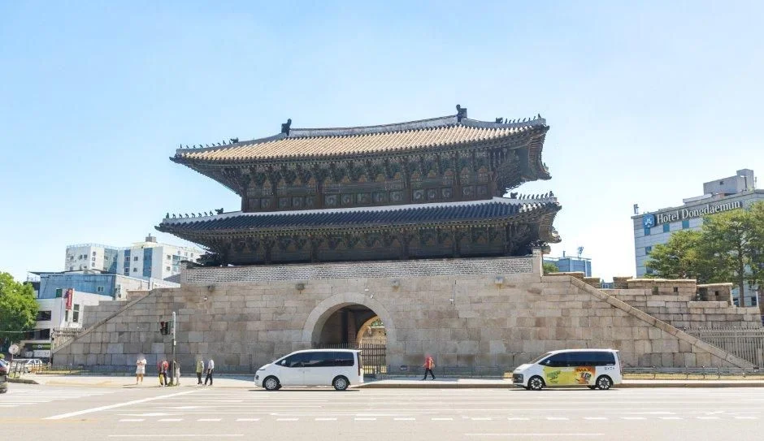
▲ 낙산구간 남쪽 끝의 흥인지문. 한국관광공사 정보로는 상시 개방이다. 촬영 시기는 자료에 없다. ⓒ 한국관광공사 · 공공누리 제1유형
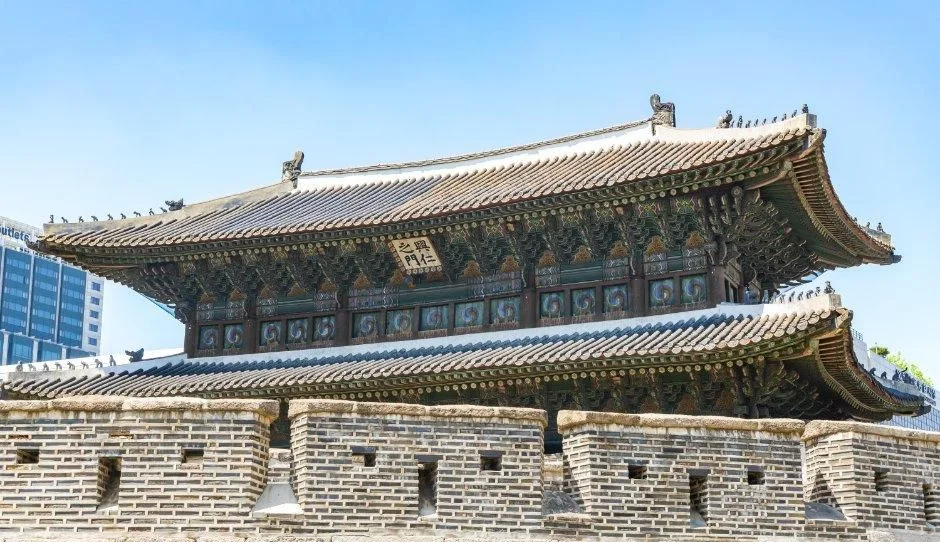
▲ ▲ 흥인지문 문루와 성벽 위 성가퀴를 가까이서 본 모습. 낙산구간 남쪽 끝이다. 촬영 시기는 자료에 없다. ⓒ 한국관광공사 · 공공누리 제1유형
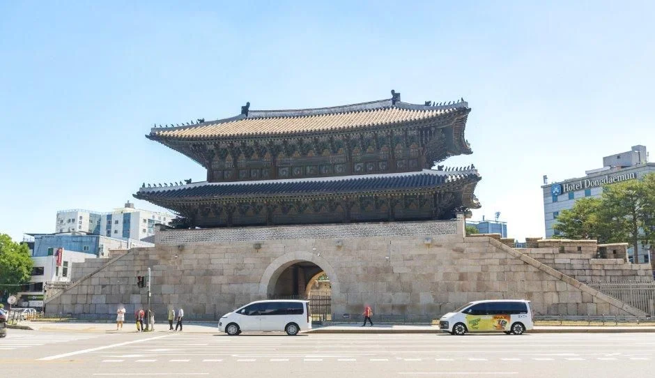
▲ ▲ 흥인지문 정면과 앞 도로. 한국관광공사 흥인지문 사진이다. 촬영 시기는 자료에 없다. ⓒ 한국관광공사 · 공공누리 제1유형
9. 겨울밤 낙산, 아쉬운 점과 확인하지 못한 것
겨울밤 낙산은 길이 열려 있어도 준비가 필요하다. 서울한양도성 순성시 유의사항은 겨울에 장갑과 방한모를 착용하고 눈이 오면 아이젠이 필요하다고 적었다. 같은 안내에 화장실 정보는 백악·인왕 구간이 약 2시간 동안 화장실이 없다는 내용뿐이고 낙산구간 야간 화장실 개방 여부는 따로 없다. 낙산공원은 서울의 공원 기준 화장실 2동과 매점 1동이 시설로 나와 있으나 야간 이용 가능 여부는 확인하지 못했다. 순성시 유의사항 바로가기
| 항목 | 상태 |
|---|---|
| 성곽 야간 조명 점등·소등 시각, 운영 주체 | 확인하지 못함(공원등 253본 293등만 확인) |
| 종로03 마을버스 막차·배차 간격 | 확인하지 못함 |
| 주차장 야간 운영시간, 만차 현황, 차종별 현행 요금 | 확인하지 못함 |
| 올겨울 낙산구간 공사·통제 공지 | 별도로 확인하지 못함(방문 전 한양도성 안내 02-779-9870~1 문의, 월요일 휴무) |
| 박물관 야간 개관·특별 운영 | 공식 자료에 없음 |
표에서 올겨울 통제 공지를 "확인하지 못함"으로 둔 것은 공지를 검색하지 못한 것이지 통제가 없다는 뜻이 아니다. 어두운 시각에는 혼자보다 동행과 함께 가고, 눈이나 얼음이 있으면 마을 계단 구간을 피하는 편이 안전하다는 점은 서울문화포털 야경명소 안내의 "동행자와 함께 방문" 문구와도 맞는다. 다른 서울 야경 전망 코스는 북서울꿈의숲 전망대 야경 가이드에서 개방·휴관 비교를 볼 수 있다.
✅ 출발 전 체크
1) 낙산구간은 24시간 개방이지만 박물관은 09:00~18:00(입장 마감 17:30, 월요일 휴관) 2) 일몰은 한국천문연구원에서 방문일 값 확인(12월 초 17:13~17:14) 3) 11월 6일~1월 7일은 일몰이 박물관 입장 마감보다 빨라 박물관을 먼저 4) 주차는 29대 유료(10분당 300원), 만차 가능성은 확인 못함 5) 마을 구간은 조용히, 성곽에 오르지 않기.
10. 정리
서울한양도성 낙산구간은 24시간 개방, 낙산공원은 상시 개방이고, 11월 6일~1월 7일(63일)은 서울 일몰이 한양도성박물관 입장 마감 17:30보다 빠르다. 낙산구간은 안내처에 따라 3.2km 약 1시간 30분 또는 2.1km 약 1시간이며, 낙산공원 주차는 29면(서울문화포털은 27면) 유료로 10분당 300원이다.
성곽 조명 점등 시각, 종로03 막차, 주차장 야간 운영과 만차 현황, 올겨울 통제 공지는 확인하지 못했다. 이 글은 2026년 10월 24일 기준이므로 방문 전 서울한양도성 누리집과 한국천문연구원에서 한 번 더 확인하자.